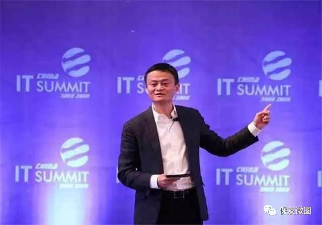
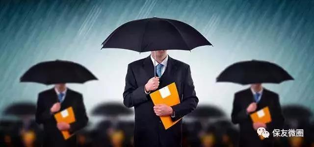
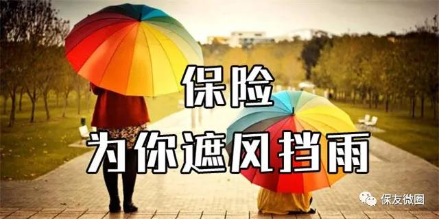

马云在杭州举行的全球峰会上发表主题演讲：将来房子如葱。他说，过去的8年，中国的房子整体上处于大幅上升的状态。8年后，中国最廉价的东西可能就是房子！
1. 房子
现在家庭基本就一个孩子，自己一套房，双方父母各一套房……最终房子都会留给后代，而空置的房子需要缴纳房产税，谁会愿意留这么多房子在手里，大家都抛售房子的后果是什么？
2. 汽车
据统计，中国汽车保有量已经超过了3亿，而且这个数字还在不断加大。各大汽车厂商都大力促销大打价格战。可以预见，10年后汽车会比今天便宜很多。
3. 现金
记得曾看到一句广告词，“很多东西越老越值钱，现金除外。” 因为通货膨胀会侵蚀现金的价值。
1. 清洁的空气
很多城市一年的雾霾天气已经占到全年的很大比重，以往平平常常的晴朗天气，竟然成了奢侈品。想要呼吸新鲜空气，举家搬迁，代价多大，不必言说。
2. 干净的水
根据媒体的报道和学界的调查，中国的水污染已经到了非常严重的地步。许多河流干涸，没有干涸的河流也面临着来自生活垃圾和工业垃圾的污染。10年后，这种状况不会减轻。
3. 安全的食品
如果我们的空气和水都被污染了，我们的食物还安全吗？如果你是一名普通百姓，没有“特供”，那么想吃到真正安全的食品，你的花费将非常大。
4. 医院的病床
马云曾说，10年后，癌症将困扰每一个家庭。如果我们居住在这样的环境中，身体将受到非常大的侵害。即使在今天，医院里也是人满为患，一床难求。更不要说10年后了。
马云的演讲警醒我们：今天我们的家庭收入不仅仅用于买房买车存银行，更需提前规划，为家庭成员投保，为因空气水污染、食品安全、各种意外带来的未来家庭风险尽早做好保障计划。
在环境污染，食品不安全的情况下，越来越多的人身患疾病。
趁着年轻、身体健康的时候，早买保险，免得“上榜”后想买也买不到。
超重、乙肝患者、肝功能异常、高血脂、血尿、高血压、吸烟、糖尿病、酗酒！这些已经被保险公司列入榜单！
在保险公司的大门还为你敞开的时候，抓紧时间吧，因为你还可以买。健康问题严重威胁我们的生活，衣食住行样样会存在侵害我们的风险。
未来10年最贵的床是病床，最贵的车是救护车，最贵的房是病房，而最贵的钱就是保险了！
人生最烦恼的不是当你不想买保险时，卖保险的人天天打扰你 ！而是当你着急买保险时，却被公司嫌弃了…是当你用到保险时，却发现来不及准备了…保险不是你想买就能买的！买了受益最大的是您，不买损失最大的还是您。